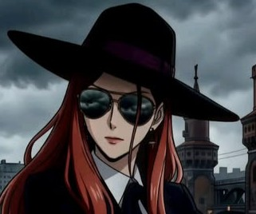
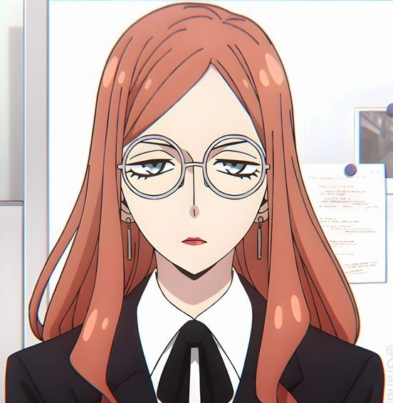
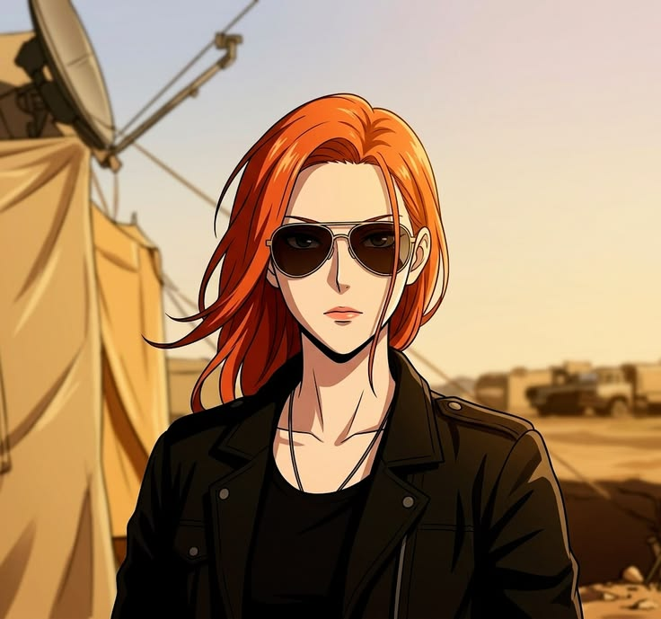
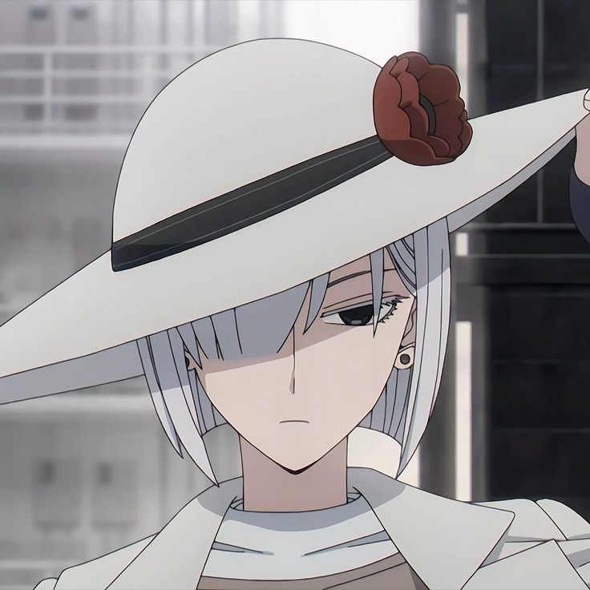
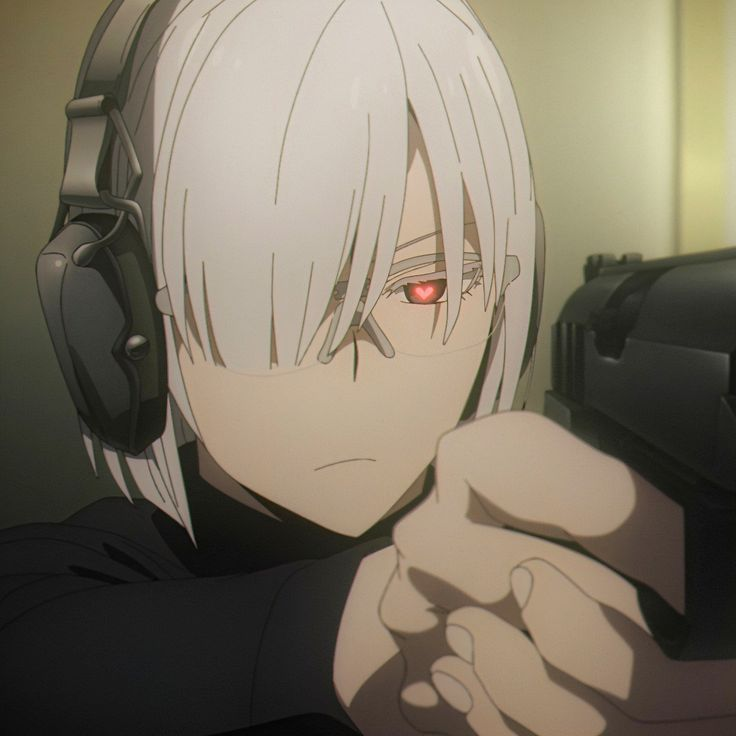
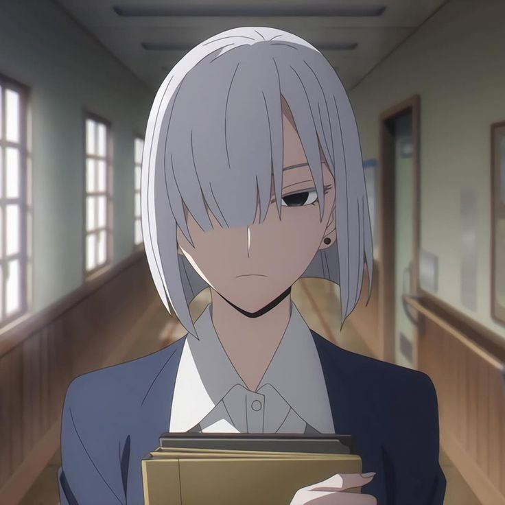
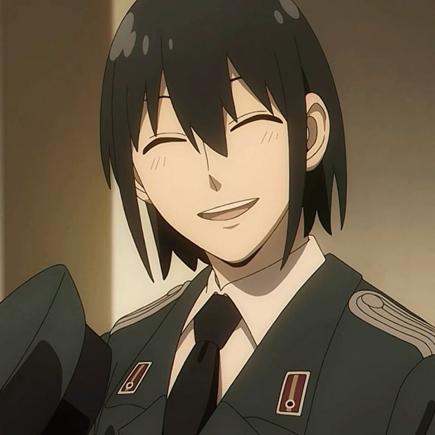
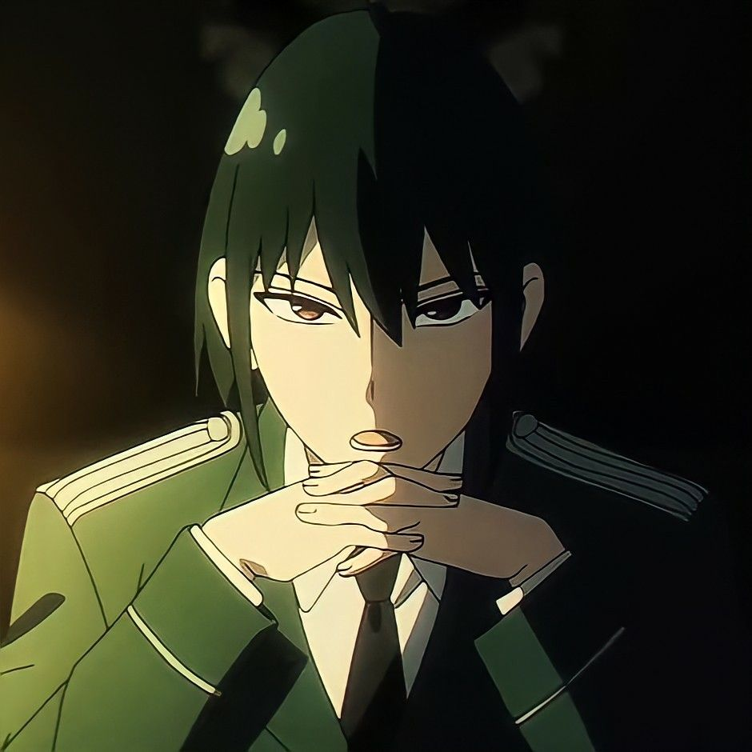
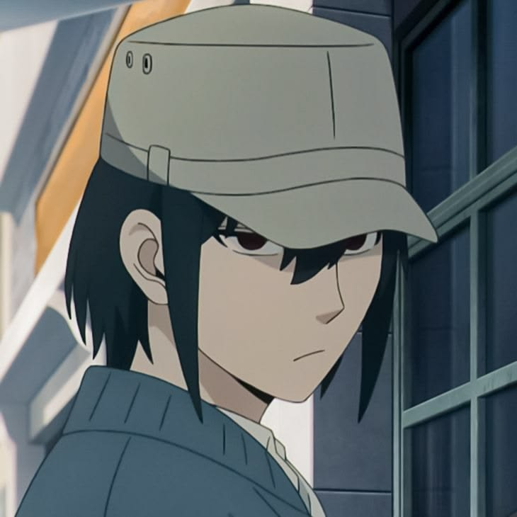

She is the cool, collected, and formidable overseer of WISE (Westalis Intelligence Services' Eastern Division). Known by her codename "Handler," she is Loid Forger's direct superior and the mastermind keeping Operation Strix on track. She manages multiple operations simultaneously, ensuring that the fragile peace between Westalis and Ostania remains intact. Though she usually operates from the shadows, she has shown herself to be highly capable in fieldwork, displaying impressive physical discipline and a sharp tactical mind. Unlike some who play the "game" of espionage for glory, Sylvia is driven by a visceral hatred for conflict. She understands the cost of war better than almost anyone, which explains her patience with Loid's "family" antics—she recognizes the value of a peaceful life, even if it's a fabricated one. While her interactions with Anya are limited, Sylvia shows a rare, soft side when observing Anya, likely reflecting the mother she once was.



She is a top-tier WISE agent and Loid Forger's protégé. While she projects an image of absolute emotional detachment—earning her the codename "Nightfall"—she is secretly harborng an intense, borderline obsessive love for Twilight. She has striking lavender-white hair, pale skin, and sharp, calculating eyes. Her fashion is usually utilitarian yet high-fashion, often involving long coats and turtlenecks. Her face is a permanent mask of apathy. She rarely blinks or changes her expression, leading coworkers to believe she is a literal machine. The comedy of her character comes from the gap between her frozen exterior and her frantic, "lovey-dovey" internal thoughts, where she constantly screams her devotion to Loid. Despite her slender frame, she possesses monstrous physical strength and endurance. During the Campbelldon tennis arc, she hit a ball with enough force to snap a racquet and shatter the ground. Fiona represents the "Spies can't have feelings" trope taken to a hilarious extreme. She tries so hard to be the perfect, emotionless tool for WISE that she has become the most emotionally volatile character in the series—at least on the inside.



He is Yor Forger's younger brother and a primary antagonist (and source of comedy) in Spy x Family. To the public, he is a dedicated civil servant at the Ministry of Foreign Affairs; in reality, he is a high-ranking lieutenant in the State Security Service (SSS)—the Ostanian secret police. At the Ministry, he is seen as a brilliant, hardworking young man who climbed the ranks quickly. He uses this "boring" job as a cover for his clandestine activities. As an SSS officer, he is known as a ruthless interrogator. He is fiercely nationalistic and spends his days hunting down Westalian spies—ironically including his own brother-in-law, "Twilight," whom he has yet to identify. After their parents died, Yor raised Yuri single-handedly, working dangerous jobs (as an assassin) to pay for his education. Yuri is well aware of her sacrifices and has dedicated his life to protecting her. Because of his attachment to Yor, he views Loid Forger as a villain who "stole" his sister. He is constantly looking for any reason to arrest Loid or prove he isn't good enough for her. He is the only person capable of eating Yor's food without immediate collapse, though it still causes him to hallucinate and "see the afterlife." To him, her cooking tastes like love. Yuri serves as a foil to Loid. While Loid is a spy for the "West," Yuri is the counter-intelligence for the "East". Yuri and Loid are two sides of the same coin—both are liars protecting their country to ensure a peaceful world for their loved ones. The comedy stems from the fact that they sit across from each other at dinner, both hiding deadly secrets, while Yuri desperately tries to find a reason to throw Loid in a dungeon for the "crime" of being a husband.